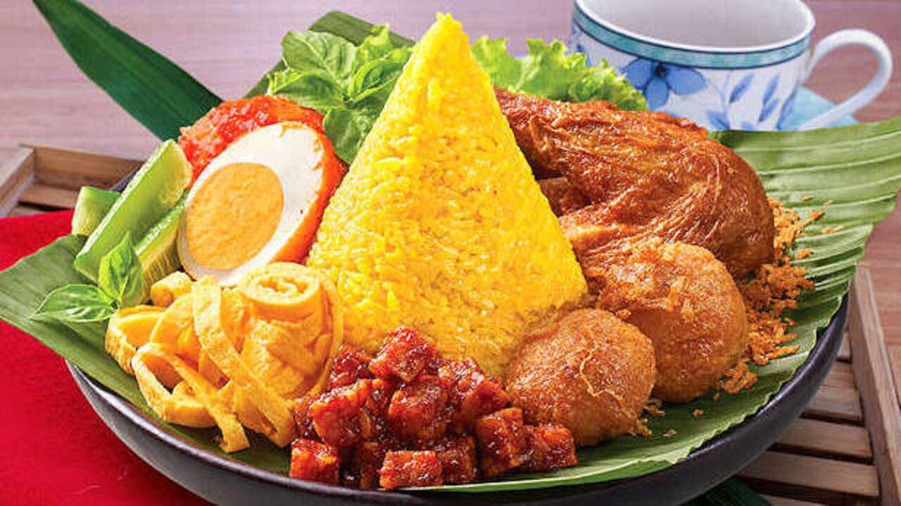

Nikmati kelezatan resep warisan leluhur yang diolah dari bumbu rempah pilihan. Dari Sabang sampai Merauke, kami menghadirkan kehangatan tradisi Indonesia langsung ke meja makan Anda. Jelajahi rasa kuliner Nusantara dengan keaslian rempah, kesegaran bahan, dan kehangatan tradisi dalam setiap sajian. Pesan sekarang dan nikmati kelezatan masakan khas Indonesia!
Pesan Sekarang